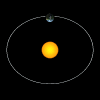

|
 |
|
|
A special double edition
German astronomer and mathematician Johannes Kepler improved upon Copernican theories as he described how planets orbit in space. Discover why Kepler deemed the true shape of the planetary paths around the sun to be ellipses, rather than circles. Discover how Kepler calculated that planets near the sun travel faster in their orbit than do planets farther away.
About the author
Johannes Kepler's discovery that the planets travel in elliptical rather than circular orbits destroyed a belief that was more than 2,000 years old. This discovery developed from his work as an assistant to the Danish astronomer Tycho Brahe. Kepler, who died in 1630, made his most significant discoveries trying to find an orbit to fit all Brahe's observations of the planet Mars. Earlier astronomers thought a planet's orbit was a circle or a combination of circles. However, Kepler could not find a circular arrangement to agree with Brahe's observations. He realized that the orbit could not be circular and resorted to an ellipse in his calculations. The ellipse worked. Kepler also discovered three laws of planetary motion and made important contributions to the science of optics. |
|